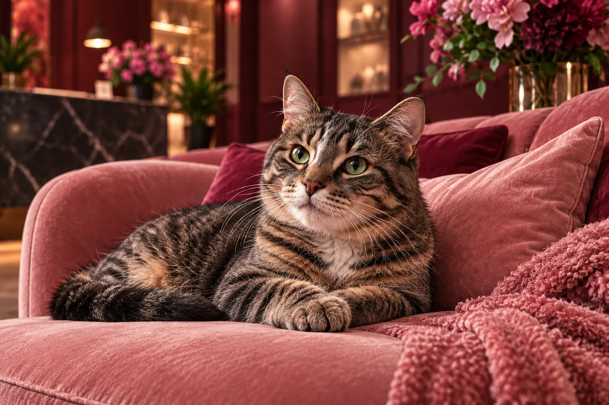

Péče ve VELVET
Behaviorální péče
Rozumět znamená pomáhat.
Změny chování mohou mít řadu příčin. Věnujeme čas prostředí, vztahům v domácnosti i zdravotnímu stavu vaší kočky.

01
Váš společný příběh
Probereme konkrétní situace a jejich vývoj v čase.
02
Prostředí a návyky
Zaměříme se na denní režim, prostor a potřeby kočky.
03
Doprovázení
Domluvíme proveditelné kroky a termín další konzultace.